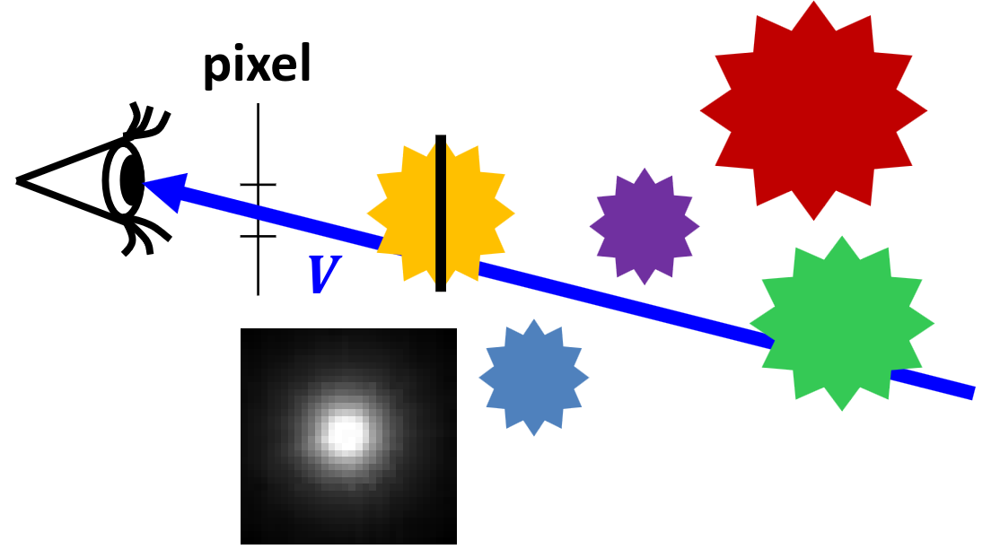

Játékfejlesztés
Játékok feladatai
- képszintézis az avatár nézőpontjából
- avatár vezérlése valamilyen beviteli eszközzel (akár többel)
- intelligens objektumok (ai/állapotgép)
- játéklogika
- a fizika világ szimulációja (Newtoni fizika)
Ezek szinte minden játéknak részei, ezért ezeket előre elkészíthetjük általános formában, egy keretrendszer (ún. game engine) formájában. A gameenginenek hála nekünk elég csak a játék konkrétumait, műkődését és kinézetét beállítani, leprogramozni.
Osztálydiagram
GameObject
class GameObject
{
protected:
Shader *shader;
Material *material;
Texture *texture;
Geometry *geometry;
vec3 pos, velocity, acceleration;
vector<GameObject *> children;
virtual void ModelingTransform(mat4 &M, mat4 &Minv) { M = Minv = UnitMatrix(); }
public:
GameObject(Shader *s, Material *m, Texture *t, Geometry *g) { … }
virtual void Control(float dt) {}
virtual void Animate(float dt) {}
virtual void Draw(RenderState state)
{ // parameter by value to separate objects
mat4 M, Minv;
ModelingTransform(M, Minv);
state.M = M * state.M;
state.Minv = state.Minv * Minv;
state.material = material;
state.texture = texture;
shader->Bind(state); // uniform variable setting
geometry->Draw(); // triangles go down the pipeline
for (Object *child : children)
child->Draw(state);
}
};
Unitysek előnyben! Nade mi is történik itt?
A játékunk érzékelhető része GameObjectekből áll, minden (majdnem), amit megjelenítünk egy GameObject (vagy annak leszármazottja). Ezek tárolás egy fa struktúrát követ, a gyökere a Scene, az összes többi csúcsban GameObjectek vannak, és ők is tartalmazhatnak más GameObjecteket (children).
Egy Gameobject tudja magáról a megjelenítéséhez szükséges tulajdonságait és alakját. Kirajzoláskor ezeket beállítja a RenderStatebe, (mert az ópengéel egy álalpotgép) mielőtt meghívná a geomteriájára a kirajzolást. Fontos megemlíteni hogy az M transzformációs mátrixot (és inverzét) nem felülírja, hanem megszorozza az eddigi állapotot. Ez azért van így, mert a GameObjectek childjainak helyzetét a parenthez relatívan értelmezzük.
Pl. Sceneből indul (0, 0, 0) origó középpontból, a karakterünket direktben tartalmazza, koordinátája egyenlő lesz a világbeli koordinátáival, mondjuk (1, 1, 1). A karakter egyik child objektuma a kalapja, ennek koordinátái a (0, 0, 2), relatíven értelmezzük, tehát a karakterünk origójától lesz ilyen távolságban. Ha az ezekhez tartozó mátrixokat egymás után összeszorozzuk, kapjuk meg a child GameObjectek tényleges világbeli pozícióját, itt ez most (1, 1, 3) lenne.
Szimulációs hurok (Game loop)
void onIdle()
{ // idle call back
static float tend = 0;
float tstart = tend;
tend = glutGet(GLUT_ELAPSED_TIME);
scene.Simulate(tstart, tend, keys);
glutPostRedisplay();
}
Azaz amikor a programunk épp nem renderel, megmérjük az előző
Simulate(Unityben update) óra eltelt időt, majd meghívjuk a függvényt.
void Scene::Simulate(float ts, float te, bool keys[])
{
avatar->ProcInput(keys);
for (float t = ts; t < te; t += dt)
{
float Dt = fmin(dt, te - t);
for (GameObject *o : objects)
o->Control(Dt);
for (GameObject *o : objects)
o->Animate(Dt);
}
}
Mi itt a
Dt? Ez az ún. delta time, ami méri két kirajzolt képkocka = két szimulációs "update tick" közti időt. Ha az eltelt idő (te-ts) nagyon nagy, az szimulációs anomáliákhoz (pl. hibás ütközés) vezethet, ezért bevezetünk egy maximum delta time változót (dt). Hate-tstúllépné ezt ezt a maximumot, akkor ezt az időegységet a biztonság kedvéért kisebb szeletekre bontjuk, kis lépésekben szimuláljuk le.
void onDisplay()
{
glClear(GL_COLOR_BUFFER_BIT | GL_DEPTH_BUFFER_BIT);
scene.Render();
glutSwapBuffers();
}
A szimulálás után pedig kirendereljük a jelenlegi állapotot.
void Scene::Render()
{
RenderState state; // M=Minv=UnitMatrix();
avatar->SetCameraTransform(state);
for (GameObject *o : objects)
o->Draw(state);
}
Figyeljük meg, hogy új
RenderStatet hozunk létre,MésMinvaz egységmátrix lesznek, azaz nem nyújtunk, nem forgatunk, nem méretezünk.
Volumetric shader
Semelyik jegyzetben, sem a videóiban nem találtam hozzá magyarázatot. Freestyle.
Kiterjedt de nem egyértelműen meghatározható geometriájú térfogatok (volume, hence the name volumetric shader), pl. köd, füst stb. megjelenítésére használjuk. Ezek többnyire minden irányból ugyan úgy néznek ki. 
Vertex shader:
uniform mat4 MVP;
layout(location = 0) in vec2 vtxPos;
out vec2 uv;
void main()
{
gl_Position = vec4(vtxPos, 0, 1) * MVP;
uv = (vtxPos + vec2(1, 1)) / 2;
}
uniform sampler2D textureMap;
uniform vec4 color;
in vec2 uv;
out vec4 fragColor;
void main()
{
fragColor = texture(textureMap, uv) * color;
}
Implementáció:
class VolumetricShader : public GPUProgram
{
public:
void Bind(RenderState state)
{
Use(); // make this program run
setUniform(state.MVP, "MVP");
setUniform(state.color, "color");
setUniform(*state.texture, "textureMap");
}
};
Avatar
A mi szemszögünk
struct Avatar : public GameObject
{
virtual void ProcessInput() {}
virtual vec3 wVup() { return vec3(0, 1, 0); }
void SetCameraTransform(RenderState &state)
{
Camera camera(pos, pos + velocity, wVup()); // a gyorsulás irányába nézünk
state.V() = camera.V();
state.P() = camera.P();
}
};
wVup = [0, 1, 0] vagy a gyorsulásból és a korábbi wVup átlagából kapjuk meg.
Keyboard polling
bool keys[256]; // is pressed?
void onKeyboard(unsigned char key, int pX, int pY)
{
keys[key] = true;
}
void onKeyboardUp(unsigned char key, int pX, int pY)
{
keys[key] = false;
}
Simulate közben ebből a tömbből polloljuk az állását.
Euler karakterisztika invariáns
\(\text{csúcs} - \text{él} + \text{lap} = \chi\)
\(\chi\) a felület topológiájától függ.
Frenet keret
transzformációval érjük el, hogy a nézőpont/geometria kijelölt "feje" a sebesség irányába nézzen.
$M = \begin{bmatrix} i' & 0 \ j' & 0 \ k' & 0 \ r & 1 \ \end{bmatrix} $
Először kiszámoljuk a nem ortonormál formájában:
(ortonormál = vektorok mertőlegesek egymásra és egység hosszúak)
\(j^* = v\)
\(k^* = k'(1-\alpha) + a \cdot \alpha\)
\(i^* = j' \times k^*\)
\(k'\)? \(\alpha\)? Hogy? Mi?
\(k'\): az előző ortonormalizált \(k'\)
\(\alpha\): súlyozási tényező, lehetővé teszi hogy az új és az előző \(k'\) előző között egy sima átmenetet biztosítsunk, és véde az \(a = 0\) eset ellen is.
Majd ortogonalizáljuk:
\(j' = \^{j^*}\qquad\qquad\) (normalizáljuk)
\(i' = \cfrac{j' \times k^* }{|j' \times k^*|}\quad~~\) (ezt is, csak nem tudom ugyan úgy jelölni)
\(k' = i' \times j'\qquad~\) (ezt már nem kell, hiszen két normalizált vektort keresztszoroztunk)
Esélyes hogy \(a\) és \(v\) nincs megadva. \(r\) első deriváltja \(v\), második deriváltja \(a\).
Ez kicsit leegyszerűsítve, \(\alpha = 1\) esetben a következő:
\(j' = \^v\)
\(i' = \^v \times \^a\)
\(k' = \^v \times \^a \times \^v\)
Ütközések
dist = length(obj1.pos - obj2.pos)
minDist = obj1.BoundingRadius() + obj2.BoundingRadius()
if (dist < minDist)
// collision
Ez egy nagyon lebutított példa, ütközés szempontjából mindent gömbként kezelünk, és a távolságuk alapján döntjük el, hogy összeérnek-e. Ütközésről külön diplomát lehetne írni szóval a bácsi sem ment bele, és bármennyire is szeretném, nekem sincs időm rá.
Probléma:

Ha az objektum gyors, a delta time nagy, átmehetünk objektumokon anélkül, hogy ütköznénk (diszkrét eset).
Megoldás: Folytonos ütközésdetektálás. Egy sugarat bocsátunk a mozgatás irányában, megnézzük hogy beleütközik-e valamibe.

A koordinátákat az vizsgált objektumhoz rögzítjük.
rel_pos = position - pos2
rel_velocity = velocity - vel2
Ray: rel_pos + rel_velocity * t
if (ray intersects bounding sphere first && tintersect < dt)
//collision
Billboard
Mindig a kamera felé néző téglalap. Gyors!
vec3 w = wEye - pos; // szem felé mutat
vec3 r = cross(up, w); // billboard vízszintes (jobb)
vec3 u = cross(r, w); // billboard függőleges (fel)
r = normalize(r) * size; // normalizáljuk és beállítjuk a méretet
u = normalize(u) * size;
Tehát a transzformációs mátrixa:
Részecskerendszer (particlesystem)
ez amúgy egy jó dolog de nem mennék részletekbe, mert aki tudja tudja és valszeg nem lesz a vizsgán
egy rakás billboard, de egyben kezeljük
Példának vegyünk porszemcséket, amit a szél fúj. Ezt a szelet tekintsük egy erőtérnek.
pos: pos += velocity * dt
velocity: velocity += acceleration * dt
acceleration: acceleration = force / weight
lifetime: random kezdeti érték
age: age += dt; if (age > lifetime) Kill();
size, dsize: size += dsize * dt;
weight, dweight: weight += dweight * dt
color, dcolor: color += dcolor * dt
Kvíz
1. A virtuális világban egy pontszerű test és egy gömb mozog. A pontszerű test a szimulációs időlépés kezdetén a (1,2,5) pontban van (mértékegység parsec) és (3,5,2) parsec/sec sebességgel halad. A gömb középpontja a szimulációs időlépés kezdetén a (2,3,7) pontban van és (9,6,2) parsec/sec sebességgel halad. Mekkora az a minimális gömbsugár, amely felett a két objektum a dt=100 msec időlépésben az intervallum elején tesztelő diszkrét ütközésdetektálási algoritmus szerint ütközik?
Megoldás: Váltsuk át a pontszerű test koordiniátáit a gömbhöz relatíven.
\(p_r = p_p - p_g = (1, 2, 5) - (2, 3, 7) = (-1, -1 -2)\)
\(v_r = v_p - v_g = (3, 5, 2) - (9, 6, 2) = (-6, -1, 0)\)
Vegyük észre, hohgy a pont egyre csak méginkább távolodni fog a gömbtől, ha ütközést szeretnénk detektálni azt mihamarabb.
időlépés intervallum elején tesztelő, diszkrét
Magyarán az első teszt \(t = 0 \cdot dt\) időben fut le.
Ekkor a távolságuk \(|p_r| = \sqrt{6} \approx 2.45\)
2. Egy test 3 darab különálló poliéder részből áll, és egyik rész sem tartalmaz lyukat. A testen összesen 10 csúcsot és 18 lapot számoltunk meg. Hány éle van?
Megoldás:
Euler karakterisztika invariánst felhasználva:
\(\text{csúcs} - \text{él} + \text{lap} = \chi\)
poliéderek esetén \(\chi = 2\), nekünk \(3\) poliéderünk van tehát \(\chi = 2 \cdot 3 = 6\)
Behelyettesítve ez
\(6 = 10 - \text{él} + 18\)
\(\text{él} = 22\)
5. Egy billboard (plakát) referencia helyzetében az origóban van és az xy síkra fekszik. Adjuk meg a modellezési transzformáció elemeit egy értékes jegyre, ha a
- a billboard mérete nem változik a transzformáció során
- a szem a világ (4,2,7) pontjában van
- a billboard által reprezentált objektum a (1,2,3) pontban van
- a billboard preferált függőleges iránya a (0,1,0)
Megoldás:
vec3 w = wEye - pos; // szem felé mutat
vec3 r = cross(w, up); // billboard vízszintes (jobb)
vec3 u = cross(r, w); // billboard függőleges (fel)
r = normalize(r) * size; // normalizáljuk és beállítjuk a méretet
u = normalize(u) * size;
Kiszámoljuk \(w, r, u\) értékeket:
\(w = \text{eye} - \text{pos} = (3, 0, 4)\)
\(r = \text{up} \times w = (4, 0, -3) \rightarrow \^{r} = (-0.8, 0, 0.6)\) (normalizáljuk)
\(u = r \times w = (0, 25, 0) \rightarrow \^{u} = (0, 1, 0)\) (ezt is)
Behelyettesítünk:
6. Egy FPS játékban az avatár pillanatnyi pozíciója (0, 0, 0), sebessége (6, 8, 0), gyorsulása (12, -9, 0). A kamera orientációt a Frenet kerettel állítjuk be. Mi lesz a kamera View transzformációja?
Megoldás: Nincs mese, ki kell számolni.
\(r = (0, 0, 0)\)
\(j' = \^v = (0.6, 0.8, 0)\)
\(i' = \^v \times \^a = (0.6, 0.8, 0) \times (0.8, -0.6, 0) = (0,0,-1)\)
\(k' = i' \times j' = (0.8, -0.6, 0)\)
Tehát a mátrixunk nem más, mint
Majd aztán eltöltesz 2 órát azzal, hogy miért nem ez a megoldás. Ez kérlek egy transzformációs mátrix, nem a kamera View transzformációja. Tehát a helyes mátrix  :
:
Ahol
\(e = r\)
\(u = i\)
\(v = k\)
\(w = -j\) (ügye nem felejtettük el, hogy a view \(-z\) irányba néz, és azt szeretnénk, hogy a irányába nézzünk)
Megfeleltetés után, és annak tudatában, hogy a második mátrix ortonormál (tehát inverze önmaga transzponáltja)
7. Egy játékobjektum orr iránya referencia helyzetben az y tengely, függőleges iránya pedig a z tengely. Az objektum pályája \(r(t)=(\cos(t), \sin(t), t)\). Adjuk meg a modellezési transzformáció elemeit egy értékes jegyre a \(t=\pi/4\)-re, ha az objektumot Frenet keret módszerrel animáljuk.
Megoldás:
\(r(t)=(\cos(t), \sin(t), t)\)
\(v(t) = \.r(t)=(-\sin(t), \cos(t), 1)\)
\(a(t) = \"r(t)=(-\cos(t), -\sin(t), 0)\)
Ezek a \(t=\frac\pi 4\) helyen:
\(r(\frac\pi 4) = (\frac{\sqrt{2}} 2, \frac{\sqrt{2}} 2, \frac\pi 4)\)
\(v(\frac\pi 4) = (-\frac{\sqrt{2}} 2, \frac{\sqrt{2}} 2, 1)\)
\(a(\frac\pi 4) = (-\frac{\sqrt{2}} 2, -\frac{\sqrt{2}} 2, 0)\)
És akkor számolunk...
\(r = (\frac{\sqrt{2}} 2, \frac{\sqrt{2}} 2, \frac\pi 4)\)
\(j' = \^v = (-\frac 1 2, \frac 1 2, \frac{\sqrt{2}} 2)\)
$i' = \^v \times \^a = (\frac 1 2, -\frac 1 2, \frac{\sqrt{2}} 2) $
\(k' = i' \times j' = (-\frac{\sqrt{2}} 2, -\frac{\sqrt{2}} 2, 0)\)
Tehát a mátrixunk nem más, mint
9. Az alábbi programsorok egy szimulációs hurkot (game loop) valósítanak meg, de nem jól működik. Válassza ki a hibás sorokat:
void onIdle ( ) { // idle call back 1) float tend = 0; 2) float tstart = tend; 3) tend = glutGet(GLUT_ELAPSED_TIME)/1000; 4) avatar->ProcessInput( ); 5) for(float t = tstart; t < tend; t += dt) { 6) float Dt = min(dt, tend - t); 7) for (GameObject * obj : objects) obj->Control(dt); 8) for (GameObject * obj : objects) obj->Animate(dt); } 9) onDisplay(); }
Hibás sorok:
- 1:
tendvagystatic, vagy a függvényen kívül kell léteznie, nem nullázhatjuk mindig - 3: nem kell leosztanunk milisecundumra
- 8-9: először animálunk, utána irányítunk
Mely problémák megoldásánál használnak Gram-Schmidt ortogonalizációt?
Megoldás:
- Billboard (plakát)
- Frenet keret
- 3D kamera transzformáció
- Fizikai animáció
- 2D kamera transzformáció
10. Egy kockát két szinten Catmull-Clark algoritmussal felosztunk. Hány háromszög keletkezik?
Megoldás:
Catmull-Clark algoritmusnál \(1\) négyszögből csinálunk \(4\)-et. Ezt kétszer is megcsináljuk:
\(6 \cdot 4 \cdot 4 = 96\) négyszög, ami kétszer ennyi, azaz \(192\) háromszög